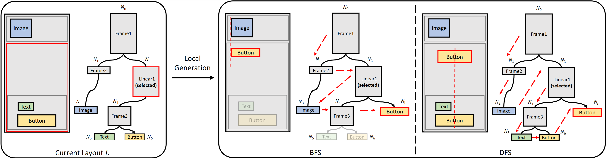
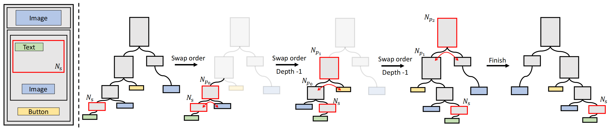
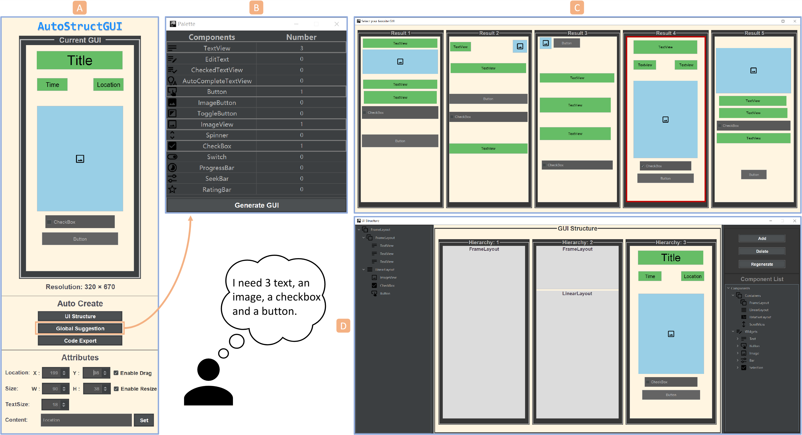
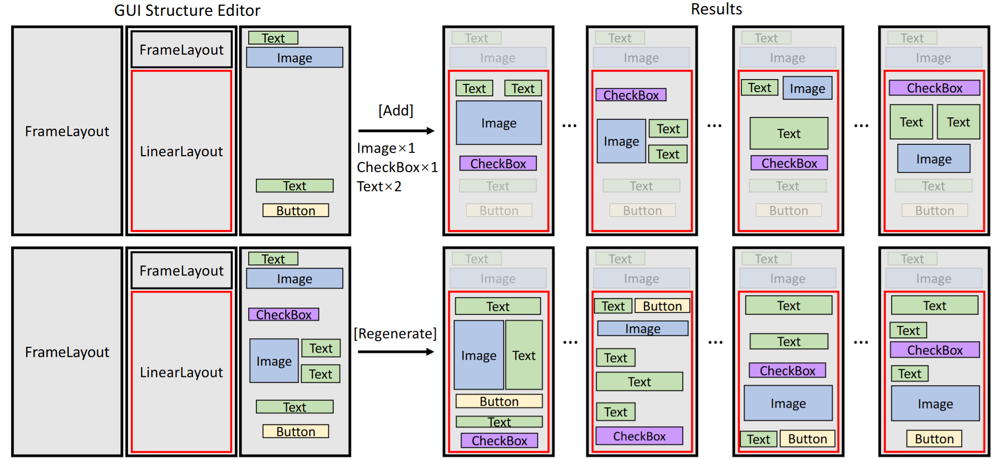
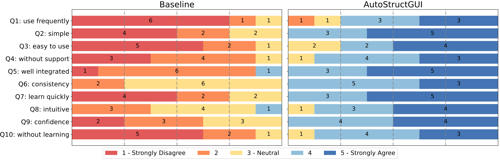
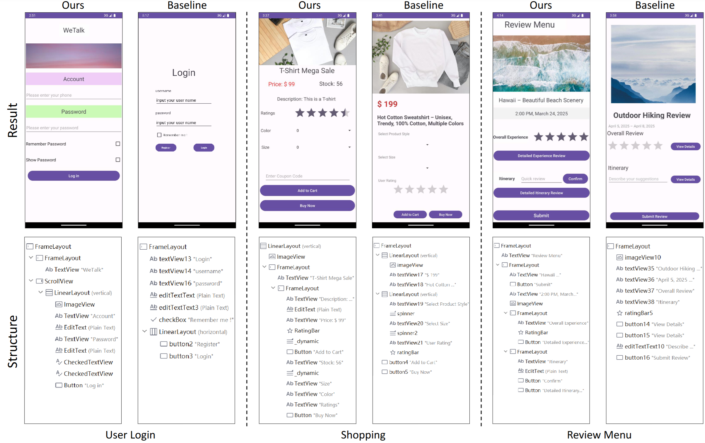

AutoStructGUI: Bridging Design and Implementation of GUI through Structured Layout Generation
Abstract
Existing automatic graphical user interface (GUI) generation frameworks primarily focus on either GUI prototype generation or GUI code conversion, failing to achieve end-to-end functional GUI generation. This paper proposes a framework named AutoStructGUI that bridges the gap between layout prototype design and functional code implementation in the development of a GUI. The framework adopts trees as the representation of GUI layouts, exploits a Transformer architecture, and uses two schemes for the serialization of GUI layout trees, enabling both global and local generation of structured GUI layouts. This framework was developed as an Android Studio plug-in to facilitate GUI layout design and functional code generation. A user study was conducted to investigate the proposed framework against the conventional GUI creation procedure. The results confirmed that the proposed framework can significantly improve development efficiency, enhance user experience, and increase GUI layout quality. The code of the framework will be released upon the acceptance of the paper.

The “loss of context” problem during local conditional generation using two serialization schemes in a GUI layout tree L.The figure shows a one-step generation result of L, where the left side illustrates breadth-first serialization (BFS) and the right side illustrates depth-first serialization (DFS). Ni represents the newly generated node, and the arrows indicate the order of nodes in the sequence.

An example of executing the branch switch strategy on a GUI layout tree L.Our framework allows users to select any container node for local conditional generation. We employ depth-first serialization and assume that container Ns is selected from GUI L. We need to adjust the order of Ns so that it becomes the last container node in the generated sequence.
AutoStructGUI Framework Design

Framework Interface.AutoStructGUI consists of four key components: (A) the GUI Overview Editor, which allows developers to use the global recommendation feature, edit GUI attributes, review the final results, and export code; (B) the Component Selection Panel, which allows developers to select components when using either the global or local recommendation functions; (C) The GUI Recommendation Window, in both global and local recommendations, it returns five diverse GUI layouts for developers to choose from freely; and (D) the GUI Structure Editor, which enables developers to edit the layout structure and utilize various local recommendation functions (such as addition and regeneration).

Local recommendation functions.AutoStructGUI is equipped with two types of local layout recommendation functions: (1) Local Addition ([Add]), which allows users to perform conditional generation within any container node of a structured GUI; and (2) Local Regeneration ([Regenerate]), which enables users to redesign the layout of any container node in the current GUI, thereby exploring a wider range of possibilities.
Experiments

User ratings of system usability for both Baseline and AutoStructGUI from User Study I. They measured on a 5-point System Usability Scale. The question descriptions here are keywords extracted from the complete SUS questions.

A gallery of GUI results from User Study I. We selected some examples from the results of the User Login, Shopping, and Review Menu tasks. Here we provide the screenshot of the results (top) and the corresponding structural list (bottom). For all the results, please refer to the supplementary materials.
BibTeX
@inproceedings{10.1145/3742413.3789058,
author = {Ren, Junquan and Xu, Pengfei},
title = {AutoStructGUI: Bridging Design and Implementation of GUI through Structured Layout Generation},
year = {2026},
isbn = {9798400719844},
publisher = {Association for Computing Machinery},
address = {New York, NY, USA},
url = {https://doi.org/10.1145/3742413.3789058},
doi = {10.1145/3742413.3789058},
abstract = {Existing automatic graphical user interface (GUI) generation frameworks primarily focus on either GUI prototype generation or GUI code conversion, failing to achieve end-to-end functional GUI generation. This paper proposes a framework named AutoStructGUI that bridges the gap between layout prototype design and functional code implementation in the development of a GUI. The framework adopts trees as the representation of GUI layouts, exploits a Transformer architecture, and uses two schemes for the serialization of GUI layout trees, enabling both global and local generation of structured GUI layouts. This framework was developed as an Android Studio plug-in to facilitate GUI layout design and functional code generation. A user study was conducted to investigate the proposed framework against the conventional GUI creation procedure. The results confirmed that the proposed framework can significantly improve development efficiency, enhance user experience, and increase GUI layout quality. The code of the framework will be released upon the acceptance of the paper.},
booktitle = {Proceedings of the 31st International Conference on Intelligent User Interfaces},
pages = {307–324},
numpages = {18},
keywords = {Graphical User Interface, Structured Layout, Transformer, Controllable Layout Generation},
location = {
},
series = {IUI '26}
}